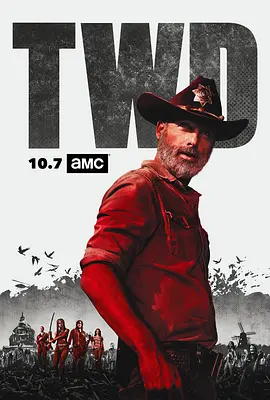

7.7
行尸走肉 第九季
The Walking Dead Season 9
2018
美国
评分 7.7
导演:
格里高利·尼克特洛 / 迈克尔·E·萨特拉米斯
演员:
安德鲁·林肯 / 诺曼·瑞杜斯 / 梅丽莎·麦克布莱德 / 劳伦·科汉 / 丹娜·奎里拉
类型:
剧情,惊悚,科幻
剧情简介
在与“救世军”的战争落幕后，幸存者们终于迎来难得的重建时期。荒地被重新开垦，倒塌的社区被一点点扶正，木梁与石块敲击的声音回荡在空旷的土地上，仿佛末日后的世界仍有被修复的可能。瑞克在各社区之间奔走，试图用新的规则和协作模式维持和平，而昔日战场上的敌意却并未完全散去，暗流在紧密的合作关系下悄然流动。治安重建的同时，人与人之间的摩擦也在增长。玛姬在山顶寨作出更强势的决策；米琼恩试图维系各方平衡；达里尔选择远离核心纷争，守着心中那片更为安静的世界。瑞克则承受着不断累积的压力——既要维护和平，也要面对旧友或新人的质疑。社区在扩张，矛盾也随之加深。就在这段看似稳定的时期，一个更诡异、更潜伏的威胁出现了。树林里的风声常常夹杂着奇怪的低语，行尸群的移动速度与模式都显得异常。幸存者们在巡逻时常感到被监视，那种被“盯着”的寒意不断爬上脊背。真相显露后，人们才意识到敌人隐藏在行尸外衣之下——低语者的出现彻底打破了重建后的平静。他们的出现让恐惧重新蔓延。面具后的呼吸声、树林深处若隐若现的身影、夜间传来的诡异低语，都让团队在心理上面临更强烈的压迫。第九季在重建与崩裂之间反复拉扯，既展现了人类试图打造新文明的努力，也让末世世界的黑暗与残酷再次浮现。